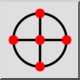
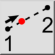
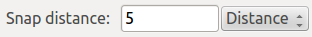
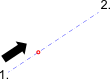

Työkalurivi / kuvake:


Tämä työkalu mahdollistaa tarttumisen pisteeseen, joka on kahden pisteen välisellä kuvitteellisella viivalla annetulla etäisyydellä ensimmäisestä pisteestä. Tämä tartuntatyökalu ei rajoita syötettyä etäisyyttä, prosenttia tai murtolukua. Syöttämällä kahden pisteen välistä etäisyyttä suuremman etäisyyden, 100:aa suuremman prosentin tai 1,0:aa suuremman murtoluvun voit tarttua pisteeseen, joka on toisen pisteen tuolla puolen. Negatiivisia arvoja voidaan syöttää tarttuakseen pisteisiin, jotka ovat ensimmäisen pisteen tuolla puolen. Murtoluvut voidaan syöttää desimaalilukuina (0.5, 0.7) tai murtolukuina (1/7, 3/11).

